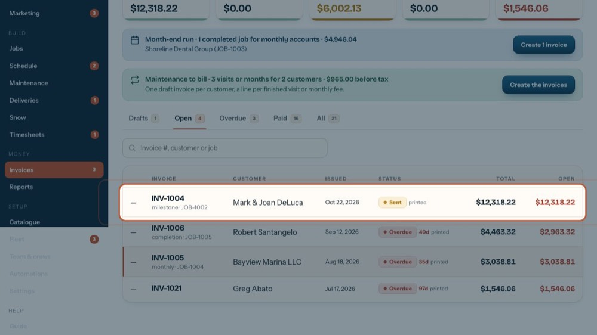
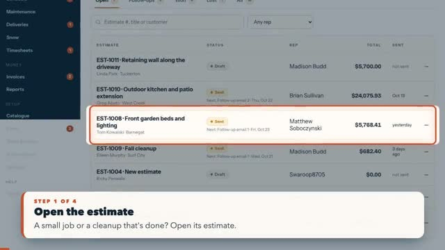
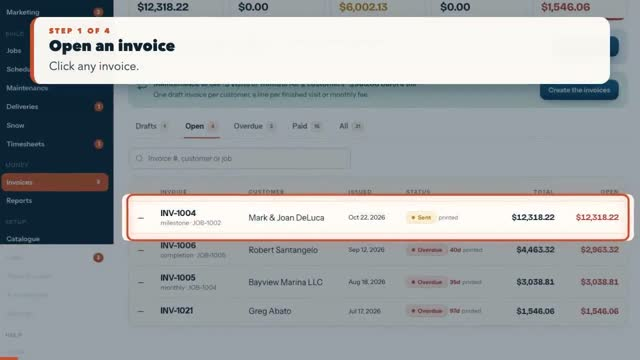

Guide / Money
Money
Invoices, payments, cards, month-end, QuickBooks, reports and commissions.
How to
 Make the QuickBooks export file10 steps Money
Make the QuickBooks export file10 steps Money Month-end billing: monthly accounts and maintenance6 steps Money
Month-end billing: monthly accounts and maintenance6 steps Money
Charge cards on file, one or many, and log a declined card9 steps Money Check a draft invoice, then email or print it14 steps Money
Check a draft invoice, then email or print it14 steps Money Commission report: filter, check, export for payroll11 steps Money
Commission report: filter, check, export for payroll11 steps Money Job costing: profit by job, salesperson and crew22 steps Money
Job costing: profit by job, salesperson and crew22 steps Money
0:58 Invoice an estimate in one click (small jobs, cleanups)4 steps Money
0:47 The customer copy: A4 invoices and proposals4 steps Money Email or print all the draft invoices at once3 steps Money
Email or print all the draft invoices at once3 steps MoneyEvery button, screen by screen
Each screen of this area, button by button, with a picture of each.